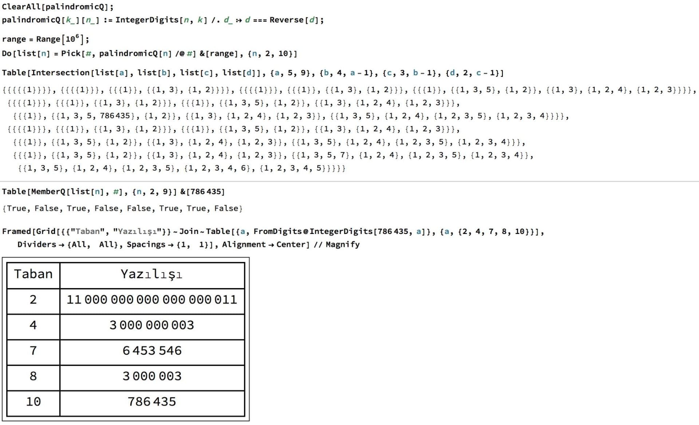

ÖZET SORU: 3, 5, 10 ve 786435 arasındaki ilişki nedir?
ÖZET CEVAP: Belirli koşullarda en küçük palindromlar bu sayılardır!
Tersten okunuşu kendisine eşit ifadelere genel olarak palindrom deniyor, matematikte de yazılış olarak kendisinin tersi olan sayılar palindrom oluyorlar, örneğin 1221 ya da 23432 palindrom sayılar.
Tabi 10 tabanında çalışmak zorunda değiliz, onluk sistemde palindrom olmayan 15 sayısı 2lik sistemde palindrom oluyor, çünkü 2 tabanında 15’i "1111" olarak yazıyoruz.
Yine 10 tabanında palindrom olmayan 78 sayısı hem 5 hem de 7 tabanında palindrom: 5’lik tabanında 303 diye yazılıyor 7’lik tabanda da 141.
Bu şekilde bir çok tabanda aynı anda palindrom olan sayı bulmak mümkün. Örneğin 242 sayısı 10’lık tabanda palindrom, 7’lik tabanda 464 diye yazılıyor gene palindrom, 3’lük tabanda 22222 diye yazılıyor gene palindrom Tabi bu açıdan bakarsak 2 sayısı hem 3 tabanında hem 4 tabanında hem 5 tabanında palindrom ama biz havalı sayılarla ilgilendiğimiz için tek haneli palindromları ihmal edelim
Tek haneli sayıları ihmal edince 3 tane farklı tabanda da palindrom olarak yazılabilen en küçük sayıyı bulması kolay: 10 Bu sayının 3 4 ve 9 tabanlarındaki yazılışı sırasıyla 101, 22 ve 11 Benzer şekilde 2 farklı tabanda da palindrom olan en küçük sayıyı bulmak kolay, 5: 2 tabanında 101, 4 tabanında 11 diye yazılıyor. En az 1 tabanda palindrom sayıysa 3: 2 tabanında 11 diye yazılıyor!
En az 1, en az 2, ve en az 3 tabanda palindrom olan sayıları bulması görmesi kolay oldu, çünkü çok küçük sayılar. Fakat en az 4 farklı tabanda havalı palindrom olan en küçük sayı kaçtır?
Elle bakması zor, fakat Mathematica ile bakması kolay Ekte kodu paylaştım, 1 milyona kadarki bütün sayıların 2den 10’a kadarki bütün tabanlardaki yazılışlarına bakıp bunlar arasında palindrom olanları seçtim. Sonra da birden fazla tabana göre palindrom olan sayıların listesini çıkardım. Bu listeye göre, ilginç bir şekilde, 4 farklı tabanda da palindrom olan 1 milyondan küçük sadece bir tane sayı var: 786435 Yani iyi ki elle bakmamışız
10 tabanında 786435 olarak bildiğimiz sayı
yazılıyor.
Yine bu Mathematica sonucuna göre de 11’den küçük 5 farklı tabanda palindrom olarak yazılabilecek 1 milyondan küçük bir sayı yok!
Bana oldukça ilginç gelen bir sonuç, sırasıyla 1, 2, 3, ve 4 farklı
tabanda palindrom olabilen en küçük sayılar 3, 5, 10 ve 786435! Hem
ilginç olduğu için sizlerle paylaşmak istedim, hem de arada böyle
paylaşımlarla programlamaya olan ilgiyi arttırmayı umuyorum: Hali
hazırda ilgililer için de ekteki resim kısa bir kod örneği olmuş oldu.
